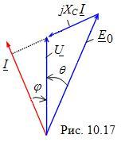

|
 Второй особенностью синхронных двигателей является то, что они,
работая с механической нагрузкой, позволяют в широких пределах изменять
реактивный ток и реактивную мощность. Действительно, при достаточном
увеличении тока Iв
ЭДС E0
становится больше Ua,
и вектор тока I якоря опережает по фазе
вектор фазного напряжения сети Uф
(рис. 10.17). Синхронный двигатель для сети становится активно-ёмкостной
нагрузкой. Эту способность перевозбужденного СД без нагрузки на
валу с опережающим током I используют
в промышленности для улучшения коэффициента мощности cosφ
цехов и заводов (синхронный двигатель работает в режиме компенсации
реактивной индуктивной мощности). Мощность асинхронных компенсаторов
достигает 100…160 Мвар. |